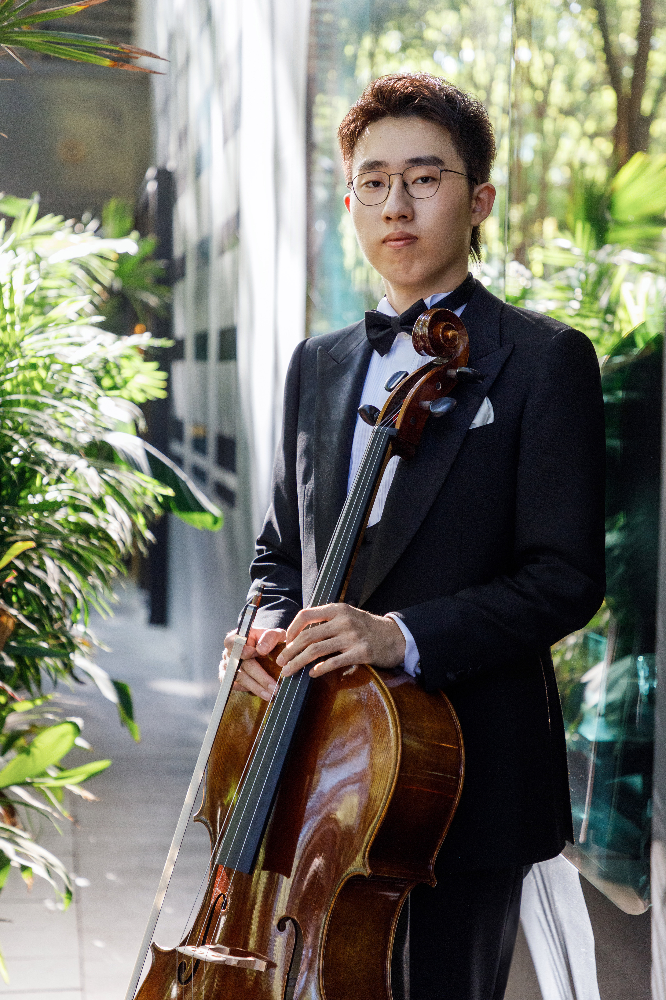

Cellist 大提琴演奏家
My name is Zixiong Zhao.
I am currently studying Cello for my Bachelor's degree at the
Hochschule für Musik, Theater und Medien Hannover.
我是赵梓雄。
目前就读于德国汉诺威音乐、戏剧与媒体学院，
攻读大提琴演奏学士学位。
Born in 2005, Zixiong began studying the cello at the age of four with Feng Jun. In 2016, he commenced formal studies with Prof. Yu Mingqing from the Central Conservatory of Music (CCOM), and continued in 2017 under Assoc. Prof. Zhu Mu. In 2018, he was admitted to the CCOM Affiliated Middle School with outstanding scores, where he studied with Prof. Yang Meng.
In 2024, he entered the Hochschule für Musik, Theater und Medien Hannover to study with Prof. Leonid Gorokhov.
Zixiong has won numerous international awards. His journey began in 2010 with a Second Prize at the 4th "Ai Qin Bei" Cello Competition. Later achievements include First Prize at the 7th "Ai Qin Bei" International Competition (2017) and Fourth Prize at the 1st "Cello Family" International Competition (2019).
His international success grew in 2021, winning First Prize at the Golden Classical Music Awards (New York), leading to an invitation to perform at Carnegie Hall. That same year, he won prizes at the Czech "Gustav Mahler Prize" Competition, "Golden Strings of Bulgaria", Italy's Città di Massa Competition, and the Vienna Golden Hall Strings Invitational.
In 2022, he received the Gold Medal at the "Dresden Winter Stars" and First Prize at the "Giuseppe Raciti Memorial" in Italy. As cellist of the "Untitled (Wu Ti)" String Quartet, he won First Prize at the 7th Hummingbird Music Competition and awards at the CMIA Chamber Music Festival.
An active performer, Zixiong played at the National Centre for the Performing Arts (Beijing) in 2019. In Germany, he performed Beethoven’s Symphony No. 9 under Eiji Oue (2024) and played in the HMTM Orchestra for "The Unanswered Question" with the NDR Radiophilharmonie under Ingo Metzmacher (2025). He has attended masterclasses with renowned cellists including Lynn Harrell, Wang Jian, and Qin Liwei.
赵梓雄出生于2005年，4岁起师从冯军老师学习大提琴。2016年起跟随中央音乐学院俞明青教授学习，2017年师从朱牧副教授。2018年，他以优异成绩考入中央音乐学院附中，师从杨锰教授。
2024年，他考入德国汉诺威音乐、戏剧与媒体学院（HMTM Hannover），师从 Leonid Gorokhov 教授。
赵梓雄在职业生涯中斩获了多项国际大奖。他的比赛生涯始于2010年第四届“爱琴杯”大提琴比赛（二等奖）。2017年，他在第七届“爱琴杯”国际大提琴比赛中获得D组一等奖及中国作品演奏奖。2019年，他在首届“大提琴的家”国际大提琴比赛少年组中获得第四名。
2021年，赵梓雄在国际舞台上崭露头角：他在纽约“金色古典音乐奖”国际比赛中获得一等奖（16-18岁组），并受邀于次年在卡内基音乐厅演出。同年，他在第三届捷克“古斯塔夫·马勒奖”大提琴比赛、保加利亚“金色弦乐”比赛、意大利马萨城（Città di Massa）比赛以及维也纳金色大厅弦乐邀请赛中均获得顶级奖项。
2022年，他荣获第12届“德累斯顿冬之星”国际比赛一等奖及金奖，以及意大利第11届“朱塞佩·拉奇蒂纪念”国际音乐比赛一等奖。作为“无题（Wu Ti）”弦乐四重奏的大提琴手，他在第七届蜂鸟音乐奖比赛中获得北京赛区及全国总决赛一等奖，并在CMIA国际室内乐音乐节中获奖。
赵梓雄拥有丰富的演出经验。2019年，他在国家大剧院参演了杨锰教授导赏的“不同风格大提琴作品赏析”音乐会。2024年11月，他在汉诺威随指挥家大植英次（Eiji Oue）演出了贝多芬第九交响曲。2025年6月，作为HMTM大学管弦乐团成员，他在汉诺威圆顶大厅（Kuppelsaal）与北德广播爱乐乐团（NDR Radiophilharmonie）合作演出了《未作回答的问题》（指挥：Ingo Metzmacher）。
他也曾参加Lynn Harrell、Matti Rossi、Philippe Muller、Michel Strauss、Gavriel Lipkind、王健和秦立巍等国内外知名大提琴家的大师班，并广受好评。
